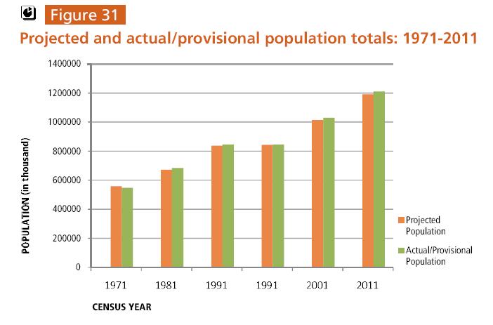
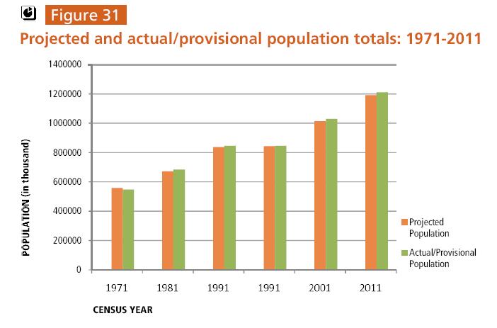
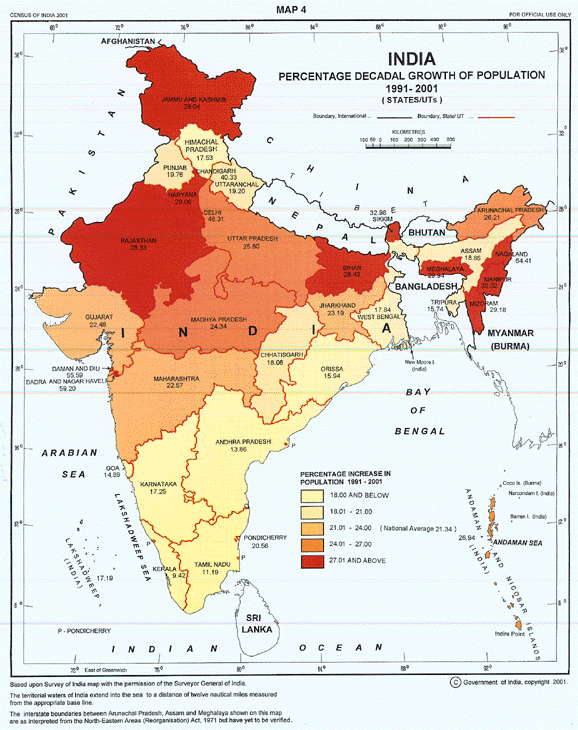
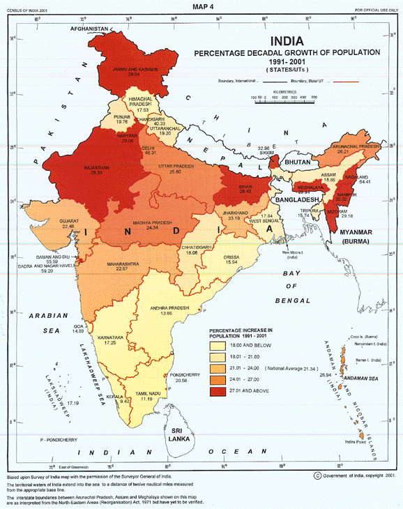

Office of the Registrar General & Census Commissioner, India
Ministry of Home Affairs,
Government of India


|
Office of the Registrar General & Census Commissioner, IndiaMinistry of Home Affairs,
Government of India | |
|
|
☰ Home About Us Census Organisation Submit Your Form Acts and Rules Current Population of World Contact Us
 

 
